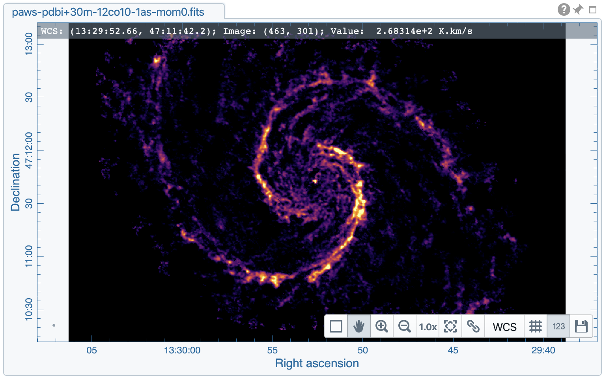
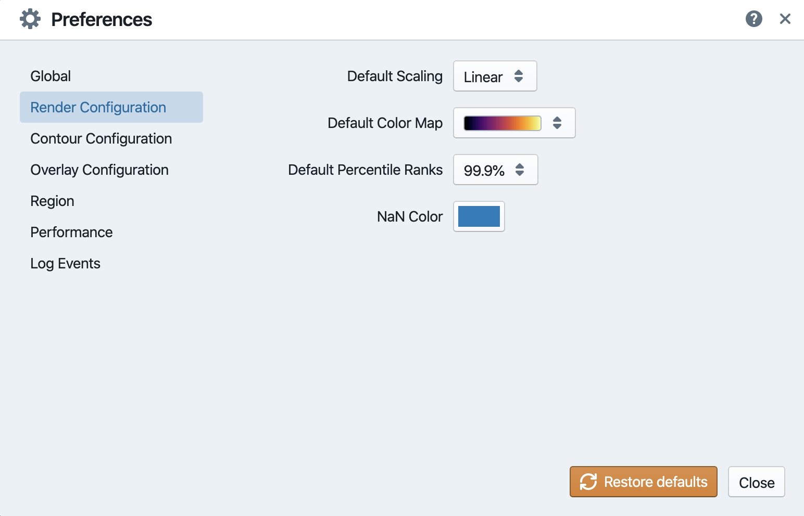
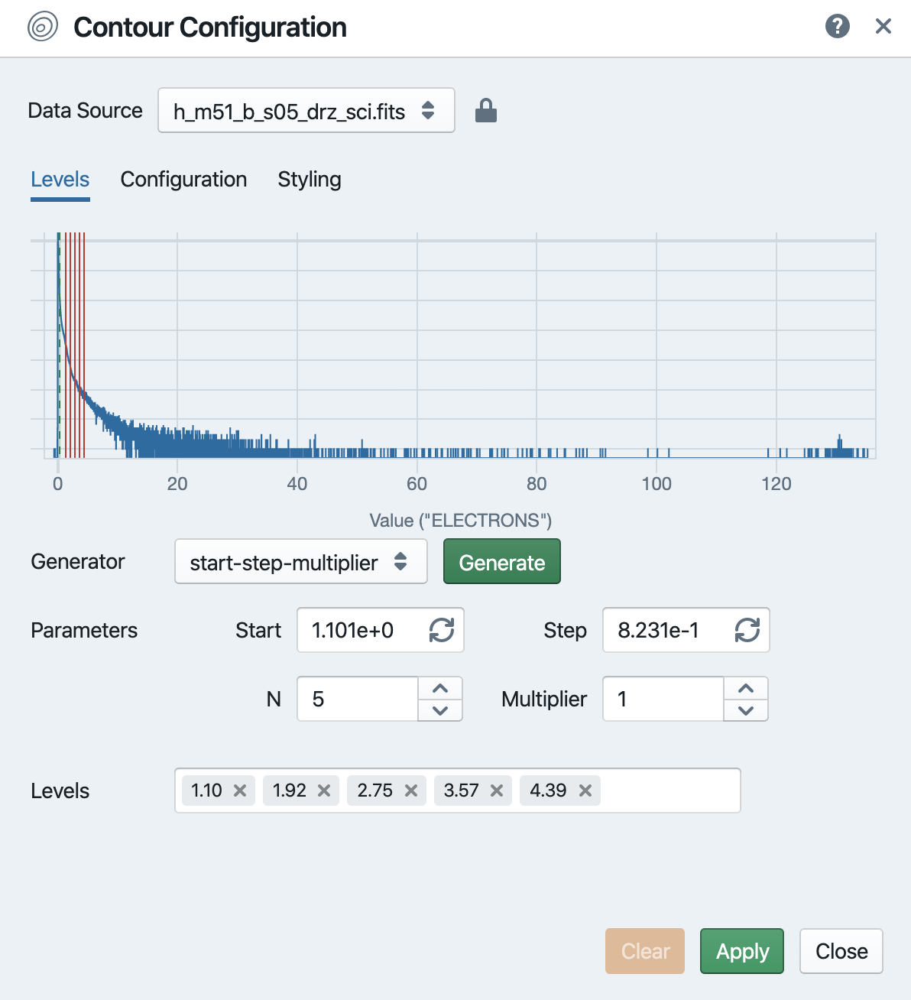
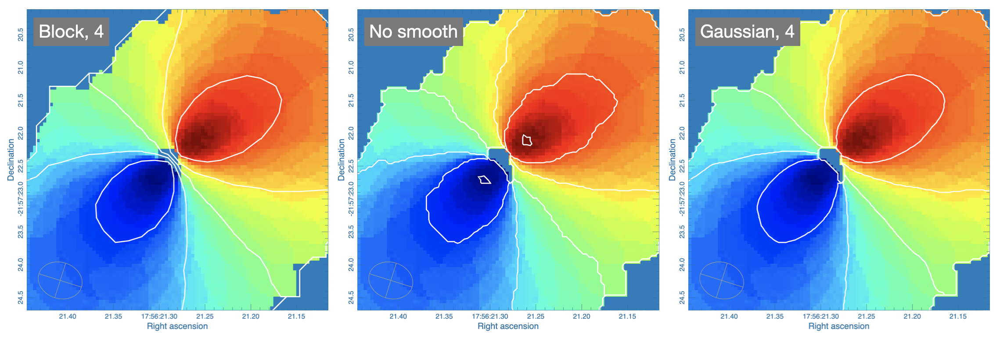
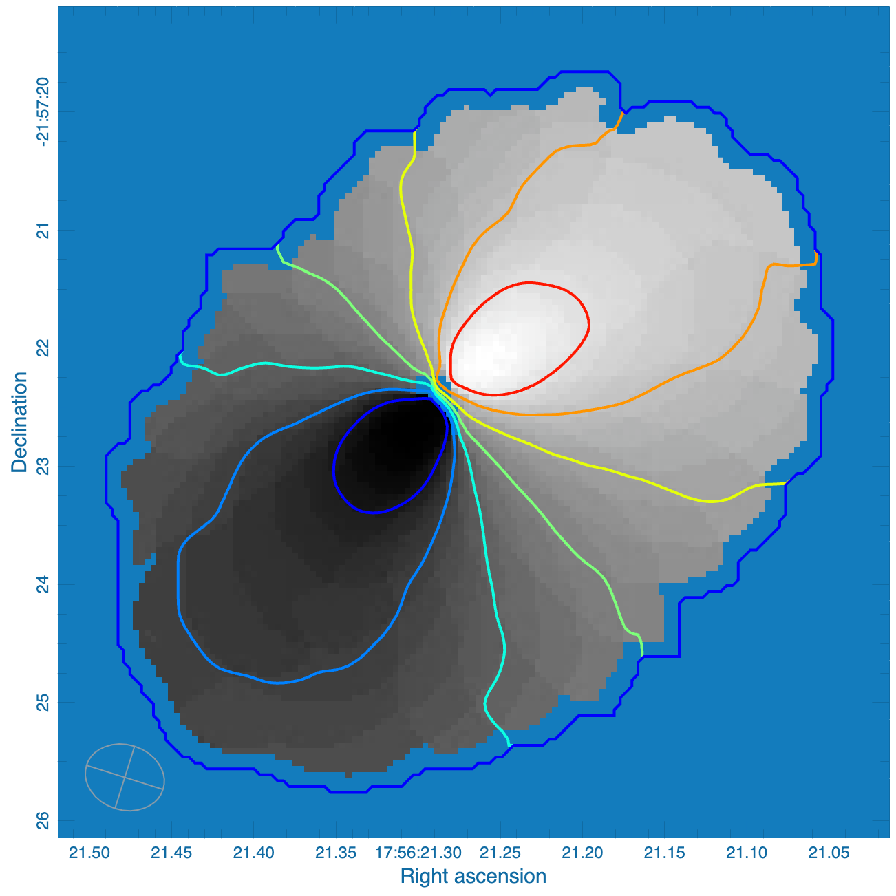
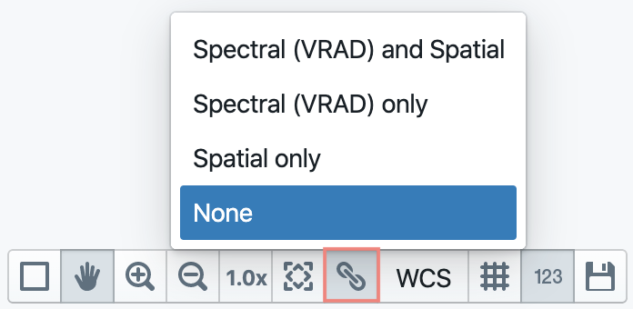

Image cube visualization¶
With version 1.3, CARTA provides the following widgets and dialogues for image cube visualization:
Widget
image viewer: to view raster images and contour images
render configuration: to configure how a raster image is rendered
animator: to navigate through different images, different channels, or different Stokes
layer list: to configure image matching in world coordinates
Dialogue
file browser: to view image headers and to load or to append an image
contour configuration: to configure how a contour image is rendered
file information: to view image headers
overlay settings: to configure the appearance of an image in the image viewer
Server-side status and session resume¶
As CARTA is fundamentally a client-server application, it would be good to know the status of the server side at the client side. This is also useful for the desktop version to know if the application runs normally or not. The server status is displayed as a circular icon at the top-right corner of the main window. The connection latency can be seen by hovering over the icon. There are three kinds of status:
Green: this means that the server side is connected successfully.
Orange: this means that the initial connection to the server side was broken (e.g., unstable internet) but has been reconnected. Users will asked to resume the previous session or not.
Red: this means that the server side is not accessible. CARTA is not functional in this case.

Note
If CARTA behaves abnormally or stops responding, please check the server-side status icon and connection latency. If it becomes red, the connection between the client side and the server side is interrupted. At this point, CARTA is not funtional. When the connection is re-established automatically, the status icon becomes orange and a prompt will be shown to ask users wheater or not to resume the previous CARTA session. By clicking the OK button, CARTA will try to resume the previous session if possible. If users choose not to resume the previous session, please reload CARTA to establish a new session. Interacting with CARTA when the status icon is orange may lead to abnormal behaviors.

File browser¶
File browser, accessible via the menu File -> Open image or the menu File -> Append image, provides information of images supported by CARTA. Currently CARTA supports images in:
CASA format
HDF5 format (IDIA schema)
FITS format
MIRIAD format
Only the images matched these formats will be shown in the file list with image type and file size. When an image is selected, a brief summary of image properties is provided on the right side of the dialogue. Full header is also available in the second tab. To view an image, click the Load button at the bottom-right corner. To view a new image and close all the loaded images, use File -> Open image -> Load button. To view multiple images, use File -> Append image -> Append button.

File browser remembers the last path where an image was opened within one CARTA session and the path is displayed (breadcrumbs) at the top of the dialogue. Therefore, when the file browser is re-opened to load other images, a file list will be displayed at the last path where the previous image was loaded. Users can use the breadcrumbs to navigate to one of the parent directories or click the home button to navigate to the base (i.e., initial) directory directly. To get an updated file list from the server side, users can click the reload button.
For the CARTA-server application, the server administrator can limit the global directory access through the “root” keyword argument when launching the CARTA backend service.
exec carta_backend port=6002 base=/scratch/images/Orion root=/scratch/images
In the above example, users will see a list of images at the “base” directory “/scratch/images/Orion” when accessing the file browser dialogue for the first time in a new session. Users can navigate to any other folders inside “/scratch/images/Orion”. By clicking the home button, users will navigate to the “base” directory “/scratch/images/Orion” directly. Users can also navigate one level up to “/scratch/images”, but not beyond that (neither “/scratch” nor “/”) as limited by the “root” keyword.
Note
An image might be closed via File -> Close image. The image currently displayed in the image viewer will be closed. If the image being closed is a WCS reference image, any other matched images to this reference image will be unmatched, thus they behave like individual images.
Note
Currently CARTA does not support the following types of images:
integer image
complex image
concatenated image
boolean image
componentlist image
image with uv coordinates
position-velocity image
LEL image
Tip
When using remote mode, an image may be opened directly using a modified URL. For example, if we wanted to open a remote image file “/home/acdc/CARTA/Images/jet.fits”, we would append
&folder=/home/acdc/CARTA/Images&file=jet.fits
to the end of the URL (e.g., http://www.carta.edu:2000/?socketUrl=ws://www.carta.edu:3000). In this example our full URL is
http://www.carta.edu:2000/?socketUrl=ws://www.carta.edu:3000&folder=/home/acdc/CARTA/Images&file=jet.fits
Please note that it is necessary to give full path. Tilde (~) is not allowed.
HDF5 (IDIA schema) image support¶
Except the CASA image format, the FITS format, and the MIRIAD format, CARTA also support images in the HDF5 format under the IDIA schema. The IDIA schema is designed to ensure that efficient image visualization is retained even with extraordinary large image cubes (hundreds GB to a few TB). The HDF5 image file contains extra data to skip or to speed up expensive computations, such as per-cube histogram or spectral profile, etc. A brief outline of the content of an HDF5 image is provided below:
XYZW dataset (spatial-spatial-spectral-Stokes): similar to the FITS format
ZYXW dataset: rotated dataset
per-channel statistics: basic statistics of the XY plane
per-cube statistics: basic statistics of the XYZ cube
per-channel histogram: histogram of the pixel values of the XY plane
per-cube histogram: histogram of the XYZ cube
Additional tiled image data, which will speed up the process of loading very large images significantly, will be added to the HDF5 image file in v1.4.
Note
Currently per-plane beam is not handled properly when converting a FITS image to the HDF5 format.
Image viewer¶
Starting from v1.3, CARTA can display images in differnt ways, such as:
a single raster image
a single raster image plus its own contours
a single raster image plus a set of contour images with matched world coordinates from other image files
a set of contour images without a background raster image

When an image is loaded in CARTA, it is shown as a raster image by default, such as the first example in the above figure. Users then could generate contour images (see Contour rendering) and enable WCS matching between different images (see Match images in world coordinates), such as the other three examples above.
Warning
If you are running a VNC session from a headless server, CARTA may fail to render images properly (they may appear as a solid color). This is due to the fact that CARTA renders images using WebGL which uses GPU to accelerate rendering process. Most headless servers have neither discrete nor dedicated GPUs. In such cases, it is highly recommended to use the “remote” mode of CARTA (see Command line startup for instructions).
In addition to displaying images, the image viewer displays cursor information at the top and provides a set of tool buttons at the bottom-right corner when hovering on the image.
The tool buttons allow users to:
create region of interests
perform zoom or pan actions
trigger matching images in world coordinates
change reference coordinate grid lines and labels
export image as a png file

The aspect ratio of the image view is determined by the panel geometry. When the image viewer panel is resized, a tip with a ratio in screen pixel will be displayed (c.f., Resizing a panel ).
Tiled rendering¶
CARTA utilizes an efficient approach, “tiled rendering”, to display a raster image. What users see in the image viewer is an ensemble of tiles (default 256 pixel by 256 pixel) processed in parallel. As an example shown in the figure below, if we have an image with 2048 pixels by 2048 pixels, tiles will be constructed in four layers with differnt downsample factors. The zero-th layer contains only one tile with a size of 256 pixels by 256 pixels. A downsample factor of 8 is applied to the original image to create this tile. The first layer contains four tiles with each a size of 256 pixels by 256 pixels. The downsample factor of 4 is applied to the original image to create these four tiles. This process continues until no downsampling is required. In this case, the tiles of the third layer are not downsampled. As users change the field of view, or the size of the image viewer, tile data of the right layer will be used. For example, if a user is interested in the field of the blue box and the image viewer has a screen size of 512 pixels by 384 pixels, tiles of the layer 2 will be used for rendering. In this case, nine tiles will be used. If the user pans a little bit around the blue box, no new tile data are required. If the user pans the view to the green box with the same viewer size, only the additional two tiles of layer 2 are required and four tiles will be re-used for rendering. With this tiled rendering approach, tiles will be re-used for different zoom levels and different field of views to minimize the amount of data transfer while keeping the image sharp on screen. Effectively, users will see that the image becomes sharper and sharper at higher and higher zoom levels.

Below is a demonstration of tiled rendering in action. Note that the video clip is made under a special internet condition in order for users to see the process clearly. Normally images are rendered much faster.
The performace of tiled rendering can be customized with the preferences dialogue, File -> Preferences -> Performance. The default values are chosen to assure raster images are displayed efficiently with sufficient accuracy. Advanced users may refine the setup if necessary. For example, when using the server version under poor internet condition, compression quality might be lowered down a bit to make the tile data smaller. Note that a smaller compression quality might introduce noticible artifacts on the raster image. Please adjust with caution. Alternatively, users may enable the low bandwidth mode, which will reduce required image resolutions by a factor of 2 (so that image will look a bit blurry) and cursor responsiveness from 200 ms to 400 ms (HDF5 images: from 100 ms to 400 ms). Under good internet conditions, users may enable streaming image tiles while zooming to see progressive updates of image resolutions at different zoom levels.

Warning
To make remote visualization of large images possible and efficient, CARTA adopts the above mentioned tiled rendering approach together with an efficient image compression algorithm. At rare circumstance, artifacts may be seen on the images. A known issue is viewing an image with all pixels as zeros but one with a very high value. At low or default zoom level, some artifacts will be observed around that pixel. At higher zoom levels, the artifacts may disappear. CARTA has been tuned to localize the artifacts within few screen pixels in order to minimize the impact of scientific analysis on such special cases. The compression quality is adjustable via the preferences dialogue, File -> Preferences -> Performance. Advanced users may need to chose a higher compression quality for those special cases with caution. Should this become a problem in any kinds of analysis of yours, please contact carta_helpdesk for help.
Note
CARTA image loading performance
The per-channel rendering approach helps to improve the performance of loading an image significantly. Traditionally when an image is loaded, the minimum and maximum of the entire image (cube) are computed first before image rendering. This becomes a serious performance issue if the image (cube) size is extraordinary large (> several GB). In addition, applying the global minimum and maximum to render a raster image usually (if not often) results in a poorly rendered image if the dynamical range is high. Then users need to re-render the image repeatedly with refined boundary values. Re-rendering such a large image repeatedly further deduces user experiences.
CARTA hopes to improve the image viewing experience by adopting GPU accelerated rendering with web browser technology. In addition, CARTA only renders an image with just enough image resolution (tiles and down-sampling). This combination results in a scalable and high-performance remote image viewer. The total file size is no longer a bottleneck. The determinative factors are: 1) image size in x and y dimensions, 2) internet bandwidth, and 3) storage I/O, instead. For a laptop with 8 GB of RAM, the largest image it can load without swapping is about 40000 pixels by 40000 pixels (assuming most of the RAM are free before loading image).
The approximated RAM usage of loading images with various spatial sizes is summarized below.
Image size (x, y) [pixel] |
RAM usage |
|---|---|
512 |
1 MB |
1024 |
4 MB |
2048 |
16 MB |
4096 |
64 MB |
8192 |
256 MB |
16384 |
1 GB |
32768 |
4 GB |
65536 |
16 GB |
Render configuration of a raster image¶
The render configuration widget controls how a raster image is rendered in the image viewer. On the top, there is a row of buttons with different clip levels plus a custom button. Below there is a plot showing the per-channel histogram (in logarithmic scale) with a bin count equals to the geometric mean of the image size (x and y). The two vertical red bars indicate the two clip values of a colormap. The green dashed line marks the mean value and the green box marks the range from mean - one standard deviation to mean + one standard deviation. Interaction with a chart, such as the histogram, is demonstrated in the section Mouse interactions with charts. On the right, there is a column of options, such as histogram type, scaling function, color map, invert color map, clip values, and control parameter of a scaling function (if applicable). Extra options to configure the histogram plot are placed in the render configuration settings dialogue enabled by the cog icon at the top-right corner of the render configuration widget. The histogram can be exported as a png image or a text file in tsv format.
By default, CARTA calculates per-channel histogram. When per-cube histogram is requested, a warning message and a progress dialogue will show up. Calculating a per-cube histogram can be time-consuming for large image cubes. Users may cancel the request at any time by pressing the cancel button in the progress dialogue. If the image is in the HDF5 format (IDIA schema), the pre-calculated per-cube histogram will be loaded directly and displayed mostly instantly.
CARTA determines the boundary values of a colormap on per-channel basis by default. That is, a default “99.9%” clip level is applied to the per-channel histogram to look for the two clip values. Then apply the values in “linear” scale to the default colormap “inferno” to render a raster image. This helps to inspect an image in detail without suffering from improper image rendering in most of cases. Below is an example of this per-channel rendering approach.
However, when comparing images channel by channel, color scales need to be fixed. This can be easily achieved by dragging the two vertical red bars, or typing in the values. When this happens, the “custom” button is enabled automatically and all frames will be rendered with the fixed boundary values. By clicking one of the clip buttons, CARTA switches back to the per-frame rendering mode if per-channel histogram is requested. Users may request the per-cube histogram to determine proper clip values. Below is an example of custom rendering with the per-cube histogram.
CARTA provides a set of scaling functions, such as:
linear: \(y = x\)
log: \(y = {\log}_{\alpha}({\alpha}x+1)\)
square root: \(y = {\sqrt{x}}\)
squared: \(y = x^2\)
gamma: \(y = x^{\gamma}\)
power: \(y = ({\alpha}x-1)/{\alpha}\)
A set of colormaps adopted from matplotlib is provided in CARTA.

The default scaling function, colormap, percentile rank, and a color for NaN pixels can be customized via the menu File -> Preferences -> Render Configuration.
Contour rendering¶
In addition to raster rendering, CARTA supports contour rendering as well. A contour image layer can be created on the same raster image or on a different raster image with world coordiantes properly matched. The contour generation process is achieved with the contour configuration dialogue which can be launched via the main tool bar.
Users may follow the following steps to generate a contour image:
Define contour levels. There are several ways to define a set of contour levels to be calculated at the server side:
by typing in individual level in the “Levels” field
by using the “Generator” to generate a series of levels
by clicking directly on the histogram plot to create levels (right-click on an existing level to remove)
Note that the “Levels” field is editable even if a set of levels has been generated with the level generator.
(optional) Define a smooth scheme and a kernel size in the “Configuration” tab. The default is Gaussian smooth with a kernel size of four pixels.
(optional) Define the appearance of contours to be rendered at the client side in the “Styling” tab. The appearance of contours can be modified after a set of contours has been rendered without triggering new contour calculations at the server side. This is the advantage of utilizing WebGL at the client side.
Once a set of levels has been defined, users can click the “Apply” button to visualize the contour image. Contour image is rendered progressively.
In the above demostration, a contour image is generated on top of its raster image. If users would like to plot a contour image on top of other raster image (e.g., velocity field as contour, integrated intensity image as raster), users need to enable WCS matching of the two raster images first (see Match images in world coordinates). Then users can generate the contour image just like the above example. When the contour image is generated, use the layer list widget or the animator widget to switch to the integrated intensity image. Users should see the velocity field image as contours on top of the integrated intensity image as raster. In short, contour images are visible for raster images matched in world coordinates.
If there are multiple images loaded in append mode, users may use the “Data Source” dropdown to select an image as the data source of contour calculations. If the state of the “lock” button is locked, image viewer will show the selected image as a raster image and the frame slider in the animator widget will be updated to the selected image too. To disable this synchronization, click the “lock” button to set the state to unlock.
CARTA provides four different level geneators to assist users to construct a set of contour levels.
“start-step-multiplier”
A set of “N” levels will be computed from “start” with a (variable) step. For example, if start = 1.0, step = 0.1, N = 5, and multiplier = 2, five levels will be generated as “1.0, 1.1, 1.3, 1.7, 2.5”. The function of the multiplier is to make the step increase per next new level. Default parameters derived from full image statistics (per-channel) are:
start: mean + 5 * standard deviation
step: 4 * standard deviation
N: 5
multiplier: 1
“min-max-scaling”
A set of “N” levels will be calculated between “min” and “max” with a spacing according to the “scaling” function. For example, if min = 2, max = 10, N = 5, scaling = “linear”, five levels will be generated as “2, 4, 6, 8, 10”. Default parameters derived from full image statistics (per-channel) are:
min: lower bound of 99.9% clip
max: upper bound of 99.9% clip
N: 5
scaling: “linear”
“percentages-ref.value”
A set of “N” levels will be derived as the percentages (“Lower(%)” and “Upper(%)”) of the “reference” in linear spacing. For example, if reference = 1.0, N = 5, lower(%) = 20, upper(%) = 100, five levels will be generated as “0.2, 0.4, 0.6, 0.8, 1.0”.
reference: upper 99.9% clip
N: 5
lower(%): 20
upper(%): 100
“mean-sigma-list”
A set of “N” levels will be generated as “mean” plus multiples of “sigma” based on the “sigma list”. For example, if mean = 1, sigma = 0.1, and sigma list = [-5, 5, 10, 15, 20], five levels will be generated as “0.5, 1.5, 2.0, 2.5, 3.0”. Default parameters derived from full image statistics (per-channel) are:
mean: full image mean value
sigma: full image standard deviation
sigma list: [-5, 5, 9, 13, 17]
CARTA provides three different contour smoothing methods, including no smooth, Gaussian smooth, and block smooth, in the “Configuration” tab. The kernel for smoothing is in number of pixels. The default is to apply Gaussian smooth with four pixels as the kernel size. Depending on science cases, users may choose different smooth methods and differnt kernel sizes.
The appearance of contours can be customized in the “Styling” tab. As an example, users may use the options to plot contours like below. Iso-velocity contours are rendered in different colors to present Doppler shifts of the source kinematics.
Match images in world coordinates¶
When multiple images are loaded in the append mode, users may optionally trigger image matching based on their world coordinates. It is a common practice to compare images from different telescopes or even from the same telescope with different spectral and spatial setups. Users can use the “Layer list widget” to trigger image matching process,

or the tool button in the image viewer.
The layer list widget lists up all load images, including their:
file name
rendering type (“Type”): “R” means raster and “C” mean contour
image matching state (“Matching”): “XY” means spatial domain and “Z” means spectral domain.
channel index
Stokes index
The first loaded image with valid spatial world coordinates serves as the spatial reference and is highlighted with an open black box (e.g., HD163296_CO_2_1.image.mom0). Similarly, the first loaded image with valid spectral coordinates servers as the spectral reference and is highlighted with an open black box (e.g., HD163296_CO_2_1.fits). To match world coordinates of other loaded image, users can click “XY” to match in the spatial domain and click “Z” to match in the spectral domain.
Hint
Users may change spatial or spectral reference image by right-clicking a cell in the “Matching” column in the layer list widget.
For raster images, matching in the spatial domain is achieved by applying translation, rotation, and scaling to images with respect to the reference image.
For contour images, matching in the spatial domain is achieved by reprojecting contour vertices to the raster image in the view. Multiple contour images are displayed on top of a raster image if spatial matching is enabled.
For image cubes, matching in the spectral domain is achieved by nearest interpolation in radio velocity. When spectral matching is enabled by clicking “Z”, the matched channel and Stokes indices are shown in the layer list widget.
Note
Projection effects of raster images
As raster images are matched spatially by applying translation, rotation, and scaling, projection effects between different images might be visible if images have wide field of view and/or images have very different projection schemes. In the following video, projection effects in raster images are demonstrated. However, projection effects of contour images are properly handled in CARTA. Contours are reprojected with sufficient accuracy with respect to the raster image as seen by users in the image viewer.
Note
If spatial reference image or spectral reference image is closed via “File” -> “Close image”, all matched images will be unmatched and a new reference image will be automatically registered.
Warning
Animation playback does not work properly with spectrally matched cubes in v1.3. This will be improved in v1.4.
Raster image or contour image may be hidden in the image viewer by clicking “R” or “C” in the layer list widget. For example, to create an image with contours only, users can click the “R” button to hide the raster image.
When multiple images are loaded in the append mode, their order determines the order in the frame slider of the animator widget. With the layer list widget, this order can be changed by dragging an entry to a desired place.
Changing image view¶
CARTA provides different ways to change the image view. With a mouse, image zoom is achieved by scrolling up/down. Image pan is achieved by dragging or command+clicking (mac) or ctrl+clicking (linux). Alternatively, image can be changed to fit the image viewer, or to fit the screen resolution (i.e., screen resolution equals full image resolution), by using the buttons at the bottom-right corner of the image viewer. Zoom in and zoom out buttons are provided as well. To change to different frames, channels, or stokes, please refer to the section Animator.
When an image is zoomed in or out, the precision of the coordinate tick values is dynamically adjusted based on the zoom level.
Cursor information¶
When the cursor is on the image viewer, pixel information at the cursor position is shown at the top side of the image. The information includes:
World coordinate of the current coordinate system.
Image coordinate in pixel.
Pixel value.
Frequency, velocity, and reference frame (if applicable).

When the coordinate system is changed (e.g., ICRS to Galactic), the displayed world coordinate will be changed accordingly. By default, they are displayed in decimal degrees for Galactic and Ecliptic systems, while for FK5, FK4, and ICRS systems, they are displayed in sexagesimal format. The precision of both formats is determined dynamically based on the image header and image zoom level.
The reference image coordinate (0,0) locates at the center of the bottom-left pixel of the image. Regardless the displayed image is down-sampled or not, the image coordinate always refers to full resolution image.
When cursor is moving, pixel value of the full resolution image is displayed. If image header provides sufficient information in the frequency/velocity domain, the frequency and velocity with the reference frame of the current channel will be shown.
To stop/resume cursor update, press “F” key. When the cursor stops updating, the cursor information bar, cursor spatial profiler, cursor spectral profiler will stop updating too.
Configuring an image plot¶
CARTA provides flexible options to configure the appearance of an image plot. The overlay settings are accessible via “View” -> “Overlay” -> “Customize”.
As an example, below is an image with default overlay settings.

And, this is a customized one. The coordinate system has been switched from FK5 to Galactic. Font type, size, and color are customized, as well as the axis border and grid lines.

The restoring beam is shown at the bottom-left corner, if applicable.
The image can be exported as a png image by clicking the “Export image” button at the bottom-right corner of the image viewer, or by “File” -> “Export image”.
Note
Currently displaying beams of a cube with per-plane-beam is not supported.
Animator¶
The animator widget provides controls of image frames, channels, and stokes. When multiple images are loaded via File -> Append image, “Frame” slider will show up and allows users to switch between different loaded images. If an image file has multiple channels and/or stokes, “Channel” and/or “Stokes” slider will appear. The double slider right below the “Channel” slider allows users to specify a range of channels for animation playback. On the top there is a set of animation control buttons such play, next, etc. Playback modes, including “forward”, “backward”, “Bouncing” and “Blink”, are supported. Playback action will be applied to the slider with the activated radio button. As an example below, the action will be applied to the channel axis of the second stokes axis of the third image file, and the animation range is from the second channel to the last channel.

The frame rate spin box controls the desired frame per second (fps). The actual frame rate depends on image size and internet condition.
Note
Step for animation playback will be added in future releases. Currently the step is unity.
Warning
In v1.3, channel animation playback of spatially matched contour images is not supported. Only spatially matched raster image is supported. This limiiation will be removed in v1.4.